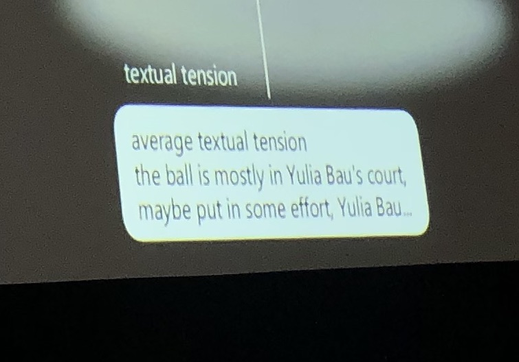
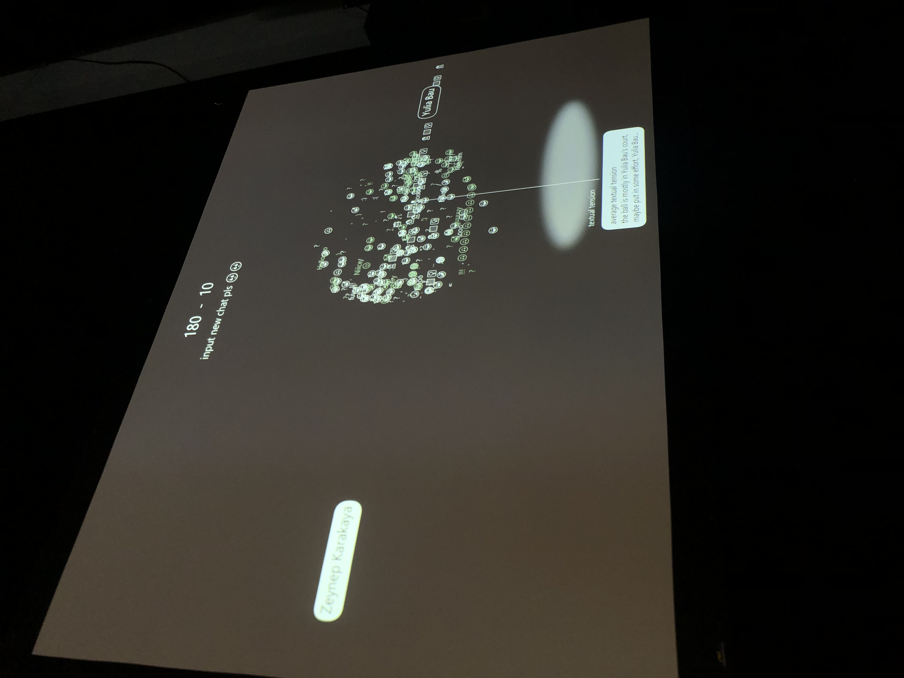

Excursion
V2: HYBRID
HYBRID: MEDIA TECHNOLOGY MSC EXHIBITION
For the excursion I decided to visit one of V2 events, that was the exhibition of installations from the students of Leiden University’s Media Technology MSc programme. The theme of the exhibition was “Hybrid” and the students presented their installations within this theme. Even though there were only six installations, I spent there around 1,5 hours because all of them were quite interesting.
My favourite installation at this exhibition was TEXTUAL TENSION
Creators: Bjorn Keyser, Oana C. Burca, Stefania Dumitru
The idea of the installation is to let people explore the balance of their online communication with one of their friends, does it represent your real life communication as well? As relationships are hybrid now - lived out both in real life and digitally.
I was asked to export my one-on-one chat with someone from WhatsApp and send it to a specific email. After that, my chat with the person was analysed based on the amount of characters used by each side. While the chat was analysed, on the screen I could see two emojis on the opposite sides of the screen. Each emoji represents one person from the chat, but it doesn’t reveal which one is you. While the chat is being analysed by the system, you see the 3D ball growing in the middle of the screen that is composed of the emojis used in the chat, as well as words with repeating letters like “heeey” or “thaaanks”. The ball is moving to one side or another based on the intensity of the conversation from each side.
As one person writes more than another, the ball bounces on the side of a more passive person. On top of the screen you can see the score how many times the ball was fully bounced to each side, on the bottom you also see the timeline that shows the intensity of the conversation for periods of time. At the end, the system reveals which side were you and concludes how balanced is the chat. In my case, I couldn’t guess right where was my side, as I thought that I was writing to a person more. But at the end the system concluded that I should put more effort in the conversation as I’m not contributing the same as another person.
 Technological side of the installationIn this installation the creators used Python to analyse the data, and Processing as the output to visualise the data. The installation doesn't have any sensors or actuators, the only action needed from the user is to share the chat from WhatsApp. The system analyses the amount of characters used by each person to conclude the balance of the conversation. The installation relies more on the user exploring and observing the output that is activated just by one-time input.
Reflection
The exhibition included six different installations, and I realised that the ones that seemed the most interesting were the ones that included self-reflection. Also, the installations presented there were created by students the same as me, and it was interesting and inspiring to see the work of other students. Unfortunately, I didn’t have the opportunity to have a long discussion with creators about the technical part of their installations, which was unfortunate, as with some installations I was really curious how students executed it in terms of coding. I also felt, that most of the installations presented there tried to put visitors outside of their comfort zone, for example talking to stangers in an intimate situation, or reflect on negative memories, or smell/taste something unpleasant. It made me think, that this type of installations might be even more emotional and engaging than something that brings you positive feelings and emotions. I think it relies on the fact that people are more affected by negative emotions and remember them better than positive ones. Therefore, if you want to get to the core of people’s minds, especially when addressing some societal issues or the problems that require actions, it’s easier to engage people with uncomfortable situations/feelings.
I felt that the installations that included emotional feedback spoke to me the most, while the ones that just gave the output that is not so personal, didn’t interest me that much. I think this was the most valuable insight I got from this exhibition.